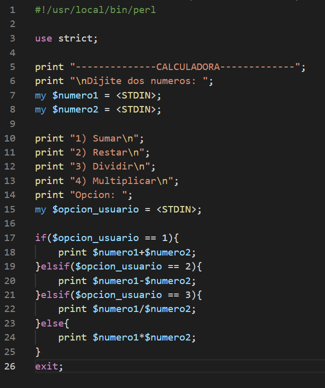

Perl(Calculadora)
Como hacer una calculadora en Perl:
Primero necesitaremos abrir un archivo Perl en VS CODE, una ves que ya abrimos el archivo escribiremos la ruta o sentencia para que nuestro
sistema operativo sepa que escribiremos un "script" de Perl y no haga errores esto es por precaucion.
| Si estas en sistema operativo Windows la ruta seria la siguiente: |
#!C:\Perl\perl.exe |
| Si estas en sistema operativo Linux la ruta seria la siguiente: |
#!/usr/bin/perl |
Utilizaremos el pragma "strict" de la siguiente forma:
use strict; #esto sirve para que el programa nos avise de errores que cometemos.
Lo siguiente es escribir un nombre yo le puse -----------CALCULADORA-------------, BUENO despues de eso le tendriamos que decir al usuario que tiene que dijitar numeros.
en este caso yo eh escrito: le agregare un salto de linea, cuando sea necesario. (\n)
print "-------------CALCULADORA-------------";
print "\nDijite dos numeros";
Ahora tenemos que crear las variables para que sean almadenados los numeros que el usuario escribira, estas variables seran llamadas:
| my $numero1; |
my $numero2; |
Sientete libre de llamarlas como quieras.
Las variables tendran un valor asignado en este caso sera STDIN, que por costumbre se pone en mayusculas entre "<>", Es un manejador de ficheros que se utiliza para leer de teclado.
Tendremos que mostrarle al usuario las opciones que tenemos que en este caso seran las siguientes:
| print "1) Sumar\n"; |
print "2) Restar\n"; |
print "3) Multiplicar\n"; |
print "4) Dividir\n"; |
print "Opcion: \n"; |
Con el print "Opcion: \n"; el usuario sabra que tiene que dijitar un numero de opciones:
Tenemos que almacenar la opcion que el usuario dijititara, crearemos una variable:
|
my $opcion_usuario; |
No olvidar que le asignamos el valor STDIN entre "<>" para que lee el teclado.
Por ultimo necesitamos hacer las operaciones:
if($opcion_usuario == 1){
print $numero1+$numero2;
}elsif($opcion_usuario == 2){
print $numero1-$numero2;
}elsif($opcion_usuario == 3){
print $numero1/$numero2;
}else{
print $numero1*$numero2;
}
Esto nos dice: Si la $opcion_usuario es igual a el numero dijitado 1, pues seria sumar.
Esto nos dice: Si la $opcion_usuario es igual a el numero dijitado 2, pues seria restar.
Esto nos dice: Si la $opcion_usuario es igual a el numero dijitado 3, pues seria multiplicar.
Esto nos dice: Si la $opcion_usuario es igual a el numero dijitado 4, pues seria dividir.
Cuando terminemos de colocar las operaciones cerramos con un:
Esto es muy importante ya que indicara al script, cuando se setiene que detener.
Eso seria todo lo que necesitariamos para hacer la calculadora en el lenguaje de programacion Perl
abajo les dejo una foto de como queda.
